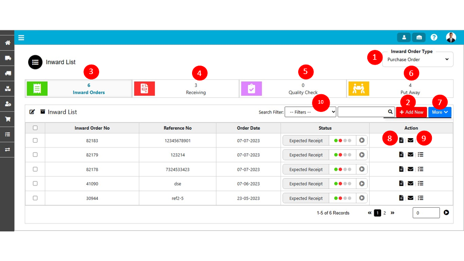
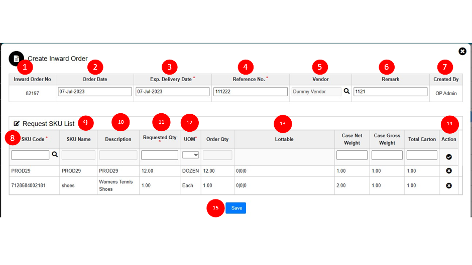
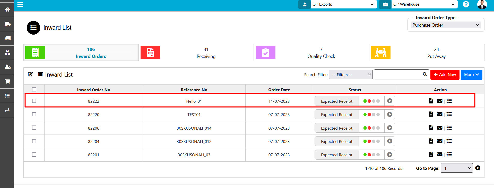
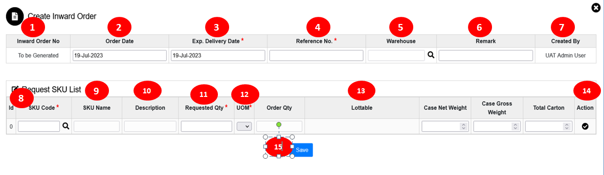

Add New Order
Inward – Inward List

To view the inward menu user needs to login into the web & click on the inward menu then the user is able to see all parts of inward like inward order, receiving, quality check as well as put away & user able to do the different activities by using different menus like document, communication.
The various parts of this dialog are:
- Inward Order Type: In Inward Order type system will display the different order types of inward like purchases order type, sales return, and Transfer in.
- Add New: By using this 'ADD NEW' button user is able to add new purchase order.
- Inward Orders: In inward orders, the tab system will display all the ongoing inward orders.
- Receiving: In this tab system will display all the received orders.
- Quality Check: In the quality check tab system will display all orders which are passed from the Quality check process.
- Put away: In the Put away tab system will display all the orders which are passed from the put-away process.
- More: If the user clicks on the more drop-down system will show a menu of cancel order, by using the cancel menu user will able to cancel the order.
- Document: In the document tab user can attach the document related to the order.
- Communication: By using the communication tab user can transfer order-related notes to the concerned person.
- Search Filter: By using the filter user is able to sort the order as per mentioned filter type of Inward order no, Reference No & order date.
Inward – Create Sales Order

For creating a new purchase order user need to click on the add a new button which is provided on the inward order list then the user is able to view the above-mentioned page for adding new order.
The various parts of this dialog are:
- Inward Order No: After filling all details regarding the inward order & clicking on the final save button system will generate the order No. which will display on the inward list for the further process.
- Order Date: The order date by default is the current date.
- Expected Delivery Date: The term describes the expected delivery date for the purchase order.
- Reference No: It is a number from which the user can identify his/her order easily.
- Vendor: The vendor is a supplier to the warehouse after clicking on the search button user is able to see the vendor list.
- Remark: In the remark, the field user can fill a short description of the order.
- Created By: In created by field system will display by which user order is getting placed.
- SKU code: In this field, the system will display the SKU code which is used for placing the purchase order. Also user can search for a new SKU by using magnifying glass from the SKU list.
- SKU Name: After selecting SKU code from the list system will display SKU name.
- Description: After selecting SKU code from the list system will display the SKU description. If the description is available for the selected SKU.
- Requested quantity: A quantity of SKU requested by the user.User need to enter the quantity.Same process needs to repeat for all SKUs.
- UOM: Unit of measure in which the system will measure the quantity in a particular format like Each=1.
- LOTTABLE: LOTTABLE is a field in which the user can add the extra parameters of SKU like expiry date. If the LOTTABLE is present for the SKU then the user needs to enter the LOTTABLE while order creation.
- Fill all details of the weight field & click on the action button then SKU will be added successfully in order.
- Click on the final save button.
After Filling all the fields of creating order click on the save button then the order no will be generated & the order will display on the inward list.

Inward – Create Sales Return Order
For creating a new sales return order user need to select the order type from the drop-down as sales return then click the "Add New" button. This will open Sales return Order wizard dialog.
The various parts of this dialog are:
- Inward Order No: After filling all the details regarding the inward order & clicking on the final save button system will generate the order No which will be display on the inward list for the further process.
- Order Date: The order date by default is the current date when the user is creating the order.
- Expected Delivery Date: The term describes the expected delivery date for the purchase order.
- Reference No: It is a number from which the user can identify the order easily.
- Vendor: The vendor is a supplier to the warehouse after clicking on the search button user is able to see the vendor list.
- Remark: In the remark, the field user can fill a short description of the order.
- Created By: In created by, The user who is placing the order is filled
- SKU code: In this field, the system will display the SKU code which is used for placing the purchase order also user can search for a new SKU by using magnifying glass from the SKU list.
- SKU Name: After selecting SKU code from the list system will display SKU name.
- Description: After selecting SKU code from the list, system will display the SKU description if the description is available for the selected SKU.
- Requested quantity: A quantity of SKU requested by the user.User need to enter the quantity.Same process needs to repeat for all SKUs.
- UOM: Unit of measure in which the system will measure the quantity in a particular format like Each=1.
- LOTTABLE: LOTTABLE is a field in which the user can add the extra parameters of SKU like expiry date. If the LOTTABLE is present for the SKU then the user needs to enter the LOTTABLE while order creation.
- Fill all details of the weight field & click on the action button then sku will add successfully in order.
- Click on the final save button.
After Filling all the fields of creating order click on the save button then the order no will generate & the order will display on the inward list.
Inward – Create Transfer In Order

For creating a new transfer in order user need to select the order type from the drop down as transfer in then click on the "Add New" button. This will open Transfer In Order wizard dialog.
The various parts of this dialog are:
- Inward Order No: After filling all details regarding the inward order & clicking on the final save button system will generate the order No which will display on the inward list for the further process.
- Order Date: The order date by default is the current date.
- Expected Delivery Date: The term describes the expected delivery date for the purchase order.
- Reference No: It is a number from which the user can identify the order easily.
- Warehouse: After clicking on the warehouse list user need to select the warehouse.
- Remark: In the remark, the field user can fill a short description of the order.
- Created By: In created by field system will display from which user order is getting placed.
- SKU code: In this field, the system will display the SKU code which is used for placing the purchase order also user can search for a new SKU by using magnifying glass from the SKU list.
- SKU Name: After selecting SKU code from the list system will display SKU name.
- Description: After selecting SKU code from the list system will display the SKU description. If the description is available for the selected SKU.
- Requested quantity: A quantity of SKU requested by the user.User need to enter the quantity.Same process needs to repeat for all SKUs.
- UOM: Unit of measure in which the system will measure the quantity in a particular format like Each=1.
- LOTTABLE: LOTTABLE is a field in which the user can add the extra parameters of SKU like expiry date. If the LOTTABLE is present for the SKU then the user needs to enter the LOTTABLE for order creation.
- Fill all details of the weight field & click on the action button then sku will add successfully in order.
- Click on the final save button.
After Filling all the fields of creating order click on the save button then the order no will generate & the order will display on the inward list.
Created with the Personal Edition of HelpNDoc: Effortlessly Convert Your Word Doc to an eBook: A Step-by-Step Guide